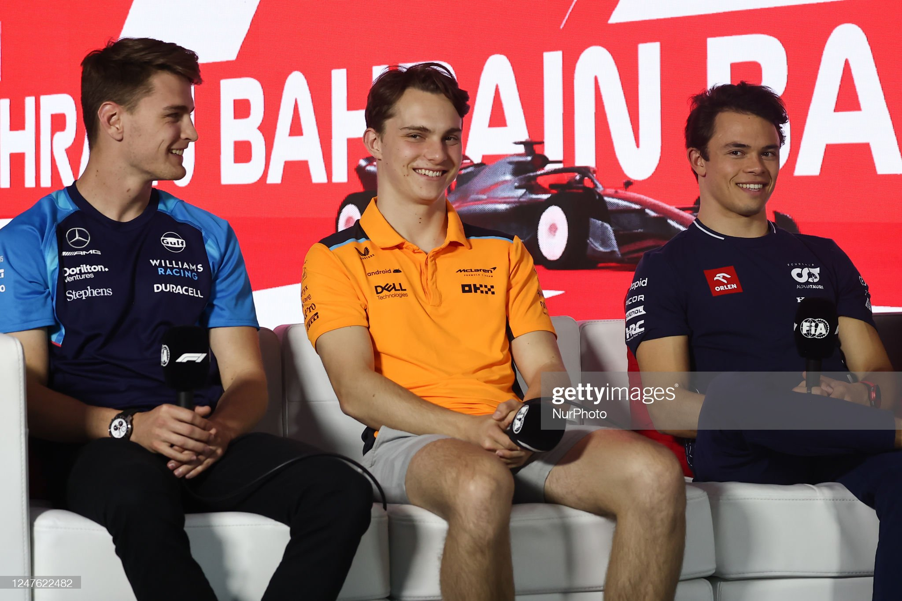
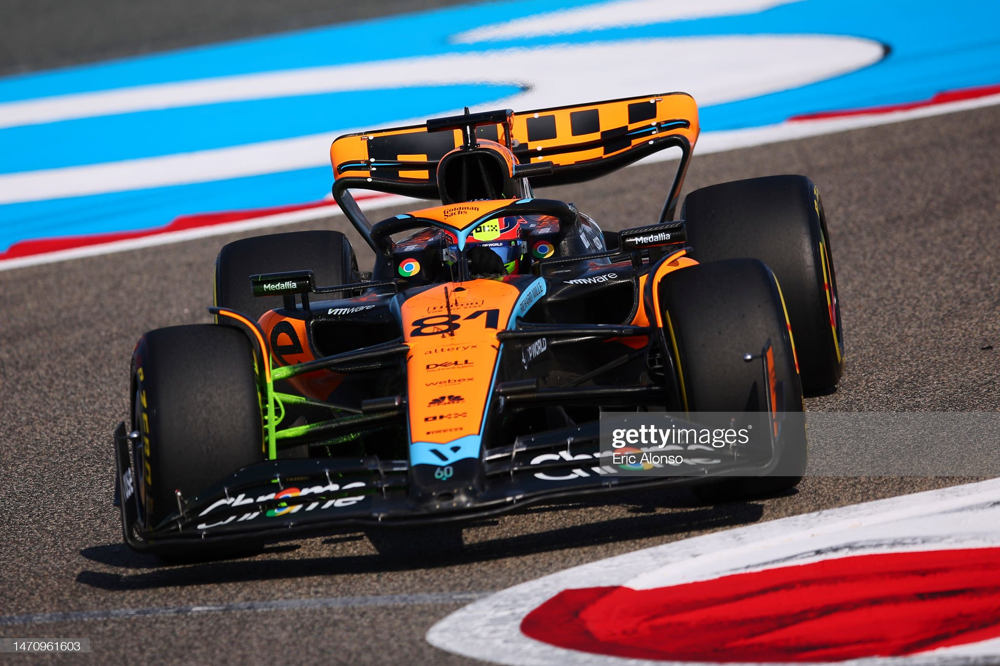
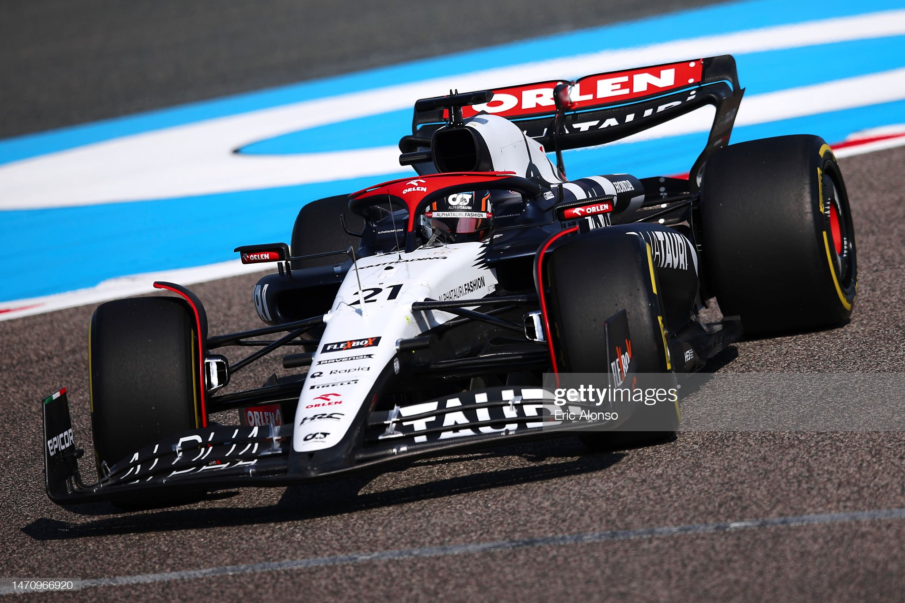
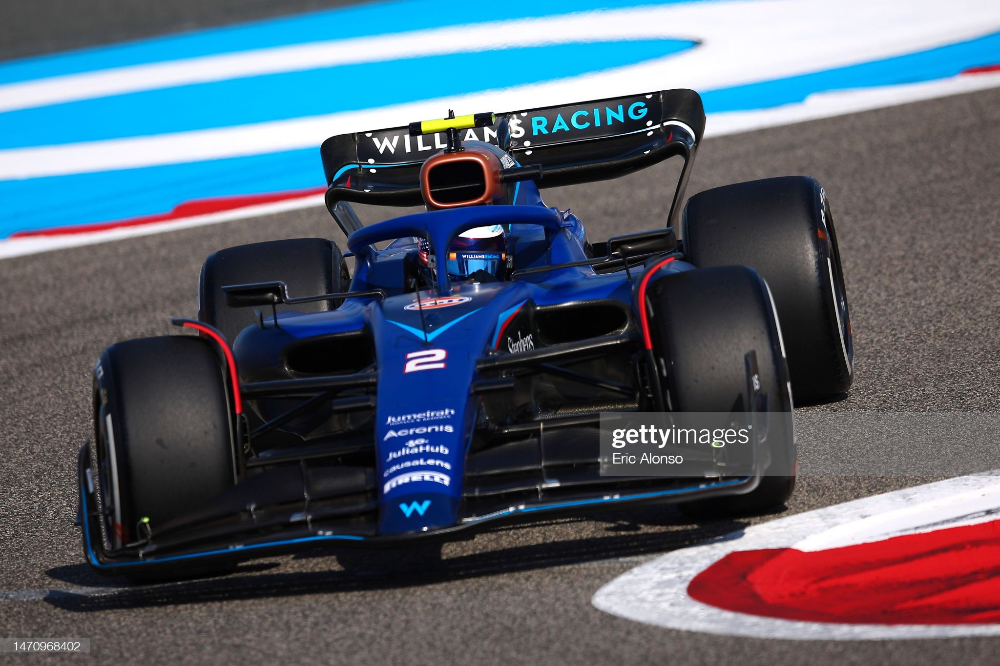

Formula 1's Rookies Guide For 2023 Season
Article cited from skysports.com

F1 is about to embark on what promises to be a thrilling 23-race campaign, and the intrigue is only increased by the presence of three new faces.
Australian Oscar Piastri is one of the most-highly-anticipated additions to the grid in a long time, while Nyck de Vries and Logan Sargeant are also out to prove they belong at motorsport's top table.
Oscar Piastri, Mclaren

After one of the most dramatic games of musical chairs in the summer of 2022, Piastri is the rookie who comes into 2023 with the most pressure on his shoulders, but also the most excitement surrounding his talent.
The young Australian will replace his compatriot Daniel Ricciardo after the eight-time winner struggled to deliver the mighty pace expected of him, eroding the reputation he had created at Red Bull and, to a lesser extent, Renault.
Piastri has enjoyed a stellar rise through the junior ranks, winning Formula 3 and Formula 2 in back-to-back seasons and even going one better than some current stars by notching a Formula Renault title in 2019. Three titles in his last three racing years highlights the 21-year-old's megastar potential, while also creating expectation for him to perform immediately in his debut campaign.
Nyck de Vries, Alpha Tauri

De Vries arrives in Formula 1 as an older rookie but also as a champion of two prestigious series - Formula 2 and Formula E - to both suggest that there should be few growing pains, and that AlphaTauri may have a new team leader.
Maturity is a key word when it comes to a 28-year-old. While some teams may have written him off for being older than most rookies, ironically, the team famous for giving young drivers a shot, AlphaTauri, is the one he joins in 2023.
He drove a Mercedes, Williams and an Aston Martin in practice last year, which led to many internet memes of him wearing different race suits. But what is more is that he seems to be one of few things that Red Bull and Mercedes have agreed on.
Logan Sargeant, Williams

Williams have promoted Formula 2's fourth-placed finisher Sargeant to Formula 1 in 2023, and one of the first questions will be: 'Why not the three drivers ahead of him in the championship?'
One answer will inevitably be his nationality, with America's F1 interest soaring and Sargeant becoming the first US driver to hit the grid since 2015. But the 22-year-old is also bolstered by the fact he was already part of the Williams young driver academy while he is also a quicker driver than his last season will have you believe.
The rookie will also arrive in Bahrain with plenty of miles in an F1 car under his belt after participating in practice sessions in Texas, Mexico City, Sao Paulo and Abu Dhabi as well as the post-season young driver test.